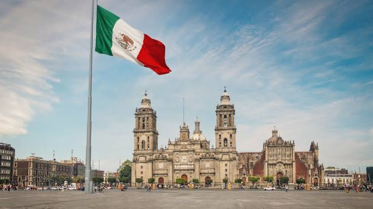
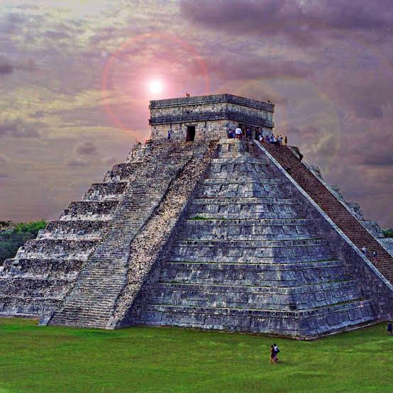
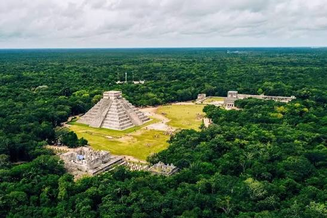
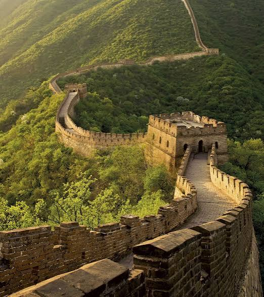
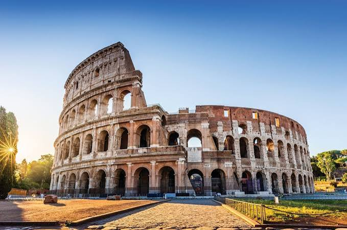

Estos son algunos de los lugares que me gustaría conocer en mis próximos viajes.
| Imagen miniatura | Lugar | Ubicación | Descripción |
|---|---|---|---|
 |
Zócalo de la Ciudad de México | Ciudad de México, México. | Me gustaría conocer el corazón histórico y cultural de la capital del país, así como sus edificios y monumentos más representativos. |
 |
Ruinas de Teotihuacán | Estado de México, México. | Me gustaría recorrer esta antigua ciudad y conocer sus impresionantes construcciones, especialmente la Pirámide del Sol y la Pirámide de la Luna. |
 |
Chichén Itzá | Yucatán, México. | Me gustaría visitar esta antigua ciudad maya y conocer la arquitectura y los conocimientos astronómicos de esta civilización. |
 |
Gran Muralla China | China. | Me gustaría recorrer una parte de esta impresionante construcción histórica y apreciar sus dimensiones y los paisajes que la rodean. |
 |
Coliseo Romano | Roma, Italia. | Me gustaría conocer este emblemático anfiteatro y aprender más sobre la historia del Imperio romano y sus antiguas construcciones. |